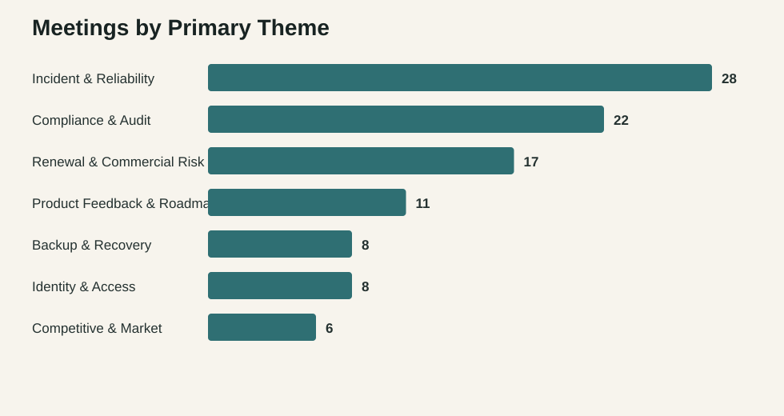

Incident & Reliability
28meetingsAvg risk 10 / sentiment 2.23
Hybrid analysis of 100 call transcripts across support, customer, and internal conversations. The pipeline turns raw transcripts into theme, sentiment, product, and risk signals for product and engineering leaders.
Avg risk 10 / sentiment 2.23
Avg risk 7.59 / sentiment 4.37
Avg risk 8.53 / sentiment 3.64
Avg risk 8.36 / sentiment 3.74
Avg risk 9.12 / sentiment 3.99
Avg risk 8.62 / sentiment 3.89
Avg risk 10 / sentiment 2.82

| Meeting | Call type | Theme | Risk | Sentiment |
|---|---|---|---|---|
| Support Case #3266 - Trailhead Marketplace Detect Alerts Not Firing | Customer support | Incident & Reliability | 10 | 1.4 |
| URGENT: Blackridge Investments - Complete Loss of Threat Visibility | Customer support | Incident & Reliability | 10 | 1.6 |
| Detect Outage - Customer Impact Assessment | Internal | Incident & Reliability | 10 | 1.8 |
| Detect Outage - Escalation Bridge | Internal | Incident & Reliability | 10 | 1.8 |
| INCIDENT: Detect Pipeline Failure - War Room | Internal | Incident & Reliability | 10 | 1.8 |
| URGENT: Cobalt Software - Aegis Detect Dashboard Down | Customer support | Incident & Reliability | 10 | 1.8 |
| Aegis / Northstar Pharma - Urgent: Detect Outage Impact | Customer support | Incident & Reliability | 10 | 2.1 |
| ESCALATION: Northstar Pharma - Detect Outage Impact on Compliance | Customer support | Incident & Reliability | 10 | 2.1 |
| Support Case #6573 - Ridgeline Logistics Detect Data Gaps | Customer support | Incident & Reliability | 10 | 2.1 |
| Protect Performance - Scalability Concerns | Internal | Incident & Reliability | 10 | 2.2 |